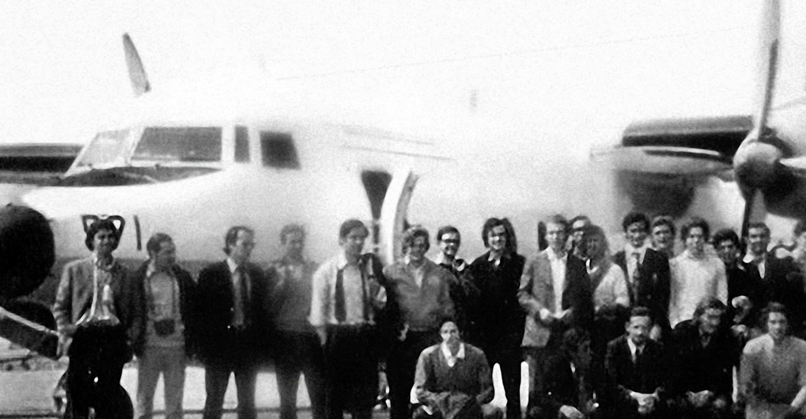
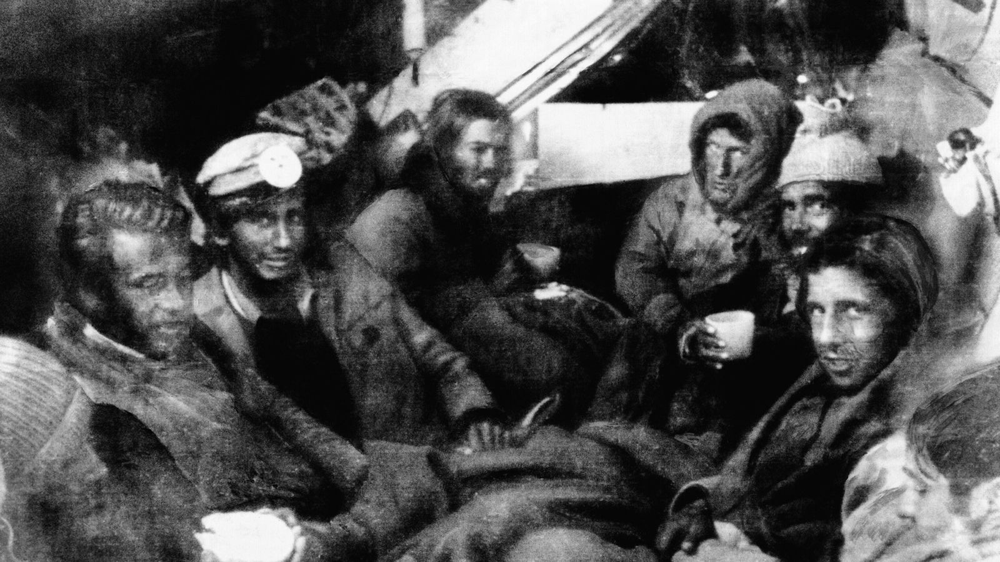
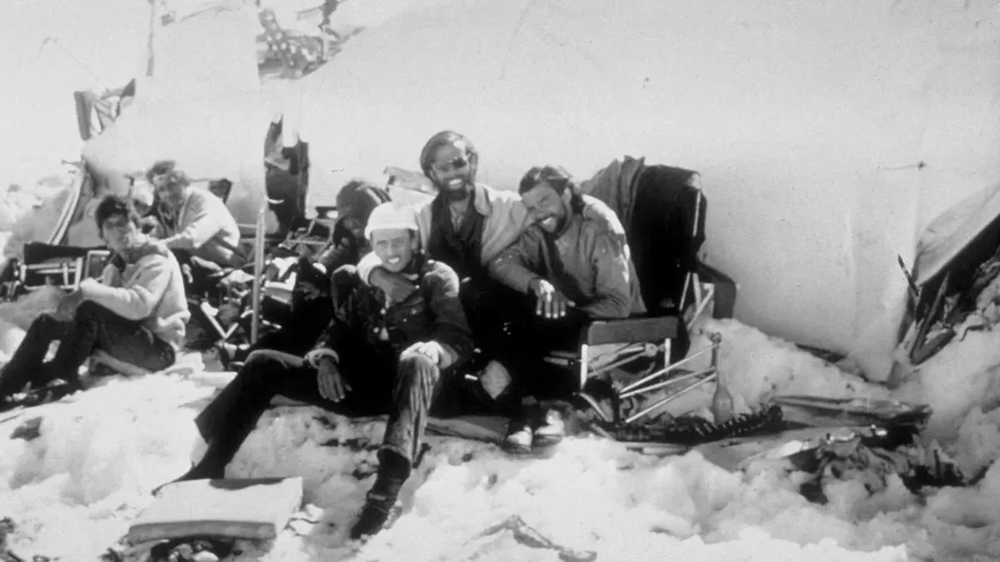

13 SEP - 22 DIC
MATADERO MADRID
13.10.1972

“Para lo amigos; de antes , de siempre, de entonces.”
El 13 de octubre de 1972 el avión uruguayo Farenchild 571 chocó contra la cordillera de los Andes, a bordo viajaban 40 pasajeros y 5 tripulantes. Durante el accidente fallecieron 13 personas, y durante la noche tres más.
23.10.1972

"Solo la imprudencia nos salvará la vida."
El dia 23 de octubre, a diez día del accidente. Escuchan en la radio la noticia de que las fuerzan aéreas Uruguayas habían suspendido la búsqueda del Farenchild 571.
Numa Turcatti, Gustavo Zerbino y Maspons, inician la primera expedición.
29.10.1972

“Porque incluso a todos los que sobrevivimos, la avalancha nos quitó un pedazo.”
29 de octubre, una avalancha desciende la montaña sepultado el fuselaje.
11.12.1972

“No hay amor más grande que el que da la vida por sus amigos.”
11 de diciembre fallece Numa Turcatti. Cuya muerte daría el impuso necesario para comenzar la expedición final de Nando Parrado, Roberto Canessa y Antonio Vizintín (Tintín)
14.12.1972

“Que extraordinario sería esto si no estuviésemos muerto.s”
15 de dieciembre Roberto, Nando y Tintín llegan a la cima pensando encontrar los valles verdes de Chile al otro lado. Sin embargo lo único que su vista consigue ver son montañas con nieve.
23.12.1972

“Nunca fuimos mejores personas que los andes.”
23 de didiembre de 1972 Roberto Canessa y Nando Parrado llegan a los Maitenes depues de 10 días caminado. El arriero Sergio Catalán les encuentra y avisa a las fuerzas nacionales de que son 16 los supervientes del accidente. Poniendo fin a la sociedda de la nieve.